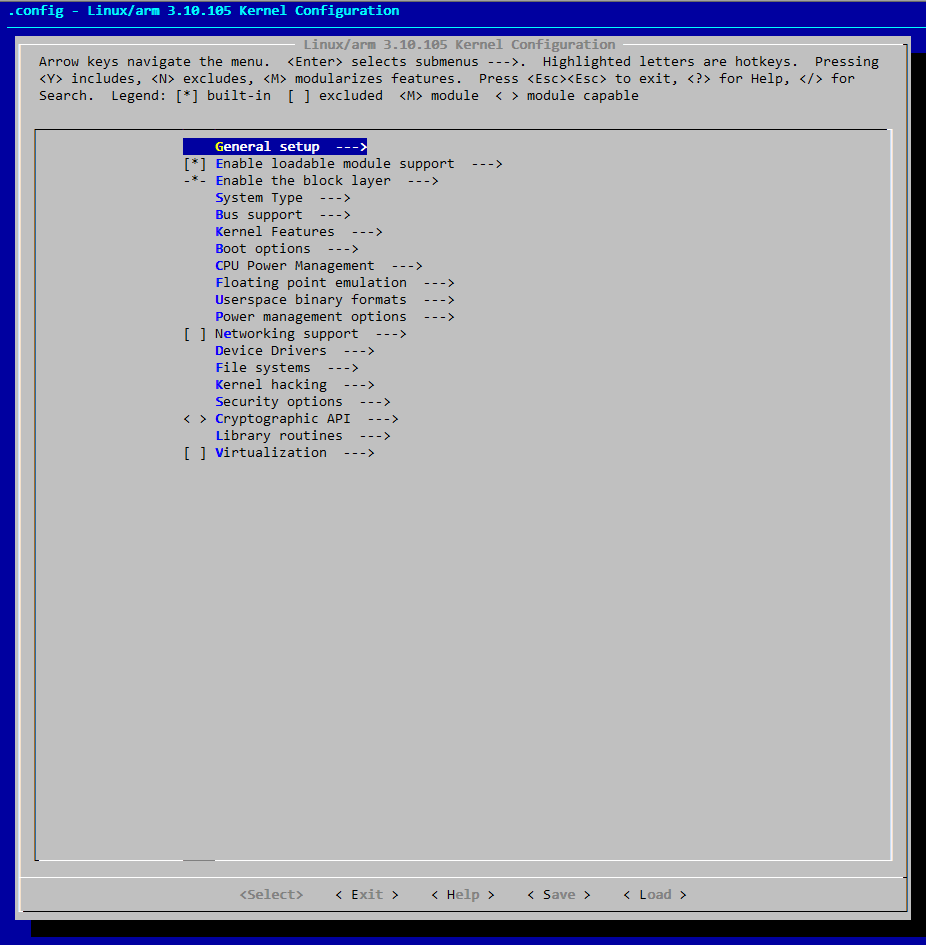

Linux内核的配置与裁剪
接触Linux也好长时间了，说来惭愧，作为一个想往嵌入式Linux开发方向发展的码丝（码农&屌丝，我瞎说的），却从来没有深入了解过Linux内核的裁剪预配置，真是太不应该了，从今天起，认真学习Linux内核驱动开发，并记录下学习的过程，人生不易，且行且珍惜吧！
由于Linux内核版本在不断升级，本文所写的步骤和说明不会符合所有的内核版本，本文所选择的Linux内核版本为 Linux-3.10.105，主机采用的是虚拟机vmware + ArchLinux X86_64 4.9.8.1 。好了，基本的都介绍完了，下面开始：
首先，我们需要一份内核源码来进行配置与裁剪，在Linux内核官网可以下载到最新版本的内核，然后解压进入内核源码目录:1
cd linux-3.10.105
linux 内核作为一个面向广大的Linux爱好者和开发者和使用者的操作系统，对于编译配置有着很好的帮助选项来告诉我们如何使用和配置内核：
执行下面的命令，会显示出来目前我们所有make目标以及目标的意义1
2
3
4
5
6
7
8
9
10
11
12
13
14
15
16
17
18
19
20
21
22
23
24
25
26
27
28
29
30
31
32
33
34
35
36
37
38
39
40
41
42
43
44
45
46
47
48
49
50
51
52
53
54
55
56
57
58
59
60
61
62
63
64
65
66
67
68
69
70
71
72
73
74
75
76
77
78
79
80
81
82
83
84
85
86
87
88
89
90
91
92
93
94
95
96
97
98
99
100
101
102
103
104
105
106
107
108
109
110
111
112
113
114
115
116
117
118
119
120
121
122
123
124
125
126
127
128
129
130
131~/working/sources/linux_source/linux-3.10.105 » make help zyk@zykpc
Cleaning targets:
clean - Remove most generated files but keep the config and
enough build support to build external modules
mrproper - Remove all generated files + config + various backup files
distclean - mrproper + remove editor backup and patch files
Configuration targets:
config - Update current config utilising a line-oriented program
nconfig - Update current config utilising a ncurses menu based program
menuconfig - Update current config utilising a menu based program
xconfig - Update current config utilising a QT based front-end
gconfig - Update current config utilising a GTK based front-end
oldconfig - Update current config utilising a provided .config as base
localmodconfig - Update current config disabling modules not loaded
localyesconfig - Update current config converting local mods to core
silentoldconfig - Same as oldconfig, but quietly, additionally update deps
defconfig - New config with default from ARCH supplied defconfig
savedefconfig - Save current config as ./defconfig (minimal config)
allnoconfig - New config where all options are answered with no
allyesconfig - New config where all options are accepted with yes
allmodconfig - New config selecting modules when possible
alldefconfig - New config with all symbols set to default
randconfig - New config with random answer to all options
listnewconfig - List new options
olddefconfig - Same as silentoldconfig but sets new symbols to their default value
Other generic targets:
all - Build all targets marked with [*]
* vmlinux - Build the bare kernel
* modules - Build all modules
modules_install - Install all modules to INSTALL_MOD_PATH (default: /)
firmware_install- Install all firmware to INSTALL_FW_PATH
(default: $(INSTALL_MOD_PATH)/lib/firmware)
dir/ - Build all files in dir and below
dir/file.[oisS] - Build specified target only
dir/file.lst - Build specified mixed source/assembly target only
(requires a recent binutils and recent build (System.map))
dir/file.ko - Build module including final link
modules_prepare - Set up for building external modules
tags/TAGS - Generate tags file for editors
cscope - Generate cscope index
gtags - Generate GNU GLOBAL index
kernelrelease - Output the release version string
kernelversion - Output the version stored in Makefile
headers_install - Install sanitised kernel headers to INSTALL_HDR_PATH
(default: /home/zyk/working/sources/linux_source/linux-3.10.105/usr)
Static analysers
checkstack - Generate a list of stack hogs
namespacecheck - Name space analysis on compiled kernel
versioncheck - Sanity check on version.h usage
includecheck - Check for duplicate included header files
export_report - List the usages of all exported symbols
headers_check - Sanity check on exported headers
headerdep - Detect inclusion cycles in headers
coccicheck - Check with Coccinelle.
Kernel packaging:
rpm-pkg - Build both source and binary RPM kernel packages
binrpm-pkg - Build only the binary kernel package
deb-pkg - Build the kernel as a deb package
tar-pkg - Build the kernel as an uncompressed tarball
targz-pkg - Build the kernel as a gzip compressed tarball
tarbz2-pkg - Build the kernel as a bzip2 compressed tarball
tarxz-pkg - Build the kernel as a xz compressed tarball
perf-tar-src-pkg - Build perf-3.10.105.tar source tarball
perf-targz-src-pkg - Build perf-3.10.105.tar.gz source tarball
perf-tarbz2-src-pkg - Build perf-3.10.105.tar.bz2 source tarball
perf-tarxz-src-pkg - Build perf-3.10.105.tar.xz source tarball
Documentation targets:
Linux kernel internal documentation in different formats:
htmldocs - HTML
pdfdocs - PDF
psdocs - Postscript
xmldocs - XML DocBook
mandocs - man pages
installmandocs - install man pages generated by mandocs
cleandocs - clean all generated DocBook files
Architecture specific targets (arm):
* zImage - Compressed kernel image (arch/arm/boot/zImage)
Image - Uncompressed kernel image (arch/arm/boot/Image)
* xipImage - XIP kernel image, if configured (arch/arm/boot/xipImage)
uImage - U-Boot wrapped zImage
bootpImage - Combined zImage and initial RAM disk
(supply initrd image via make variable INITRD=<path>)
* dtbs - Build device tree blobs for enabled boards
install - Install uncompressed kernel
zinstall - Install compressed kernel
uinstall - Install U-Boot wrapped compressed kernel
Install using (your) ~/bin/installkernel or
(distribution) /sbin/installkernel or
install to $(INSTALL_PATH) and run lilo
mmp2_defconfig - Build for mmp2
lart_defconfig - Build for lart
pxa255-idp_defconfig - Build for pxa255-idp
neponset_defconfig - Build for neponset
spear6xx_defconfig - Build for spear6xx
ag5evm_defconfig - Build for ag5evm
at91sam9g20_defconfig - Build for at91sam9g20
s5pc100_defconfig - Build for s5pc100
mainstone_defconfig - Build for mainstone
mini2440_defconfig - Build for mini2440
.
.
.
rpc_defconfig - Build for rpc
s3c6400_defconfig - Build for s3c6400
.
.
.
make V=0|1 [targets] 0 => quiet build (default), 1 => verbose build
make V=2 [targets] 2 => give reason for rebuild of target
make O=dir [targets] Locate all output files in "dir", including .config
make C=1 [targets] Check all c source with $CHECK (sparse by default)
make C=2 [targets] Force check of all c source with $CHECK
make RECORDMCOUNT_WARN=1 [targets] Warn about ignored mcount sections
make W=n [targets] Enable extra gcc checks, n=1,2,3 where
1: warnings which may be relevant and do not occur too often
2: warnings which occur quite often but may still be relevant
3: more obscure warnings, can most likely be ignored
Multiple levels can be combined with W=12 or W=123
Execute "make" or "make all" to build all targets marked with [*]
For further info see the ./README file
内核提供的make目标简介
从make help的输出来看，内核主要给我们提供了下面几种目标：
- 清除配置文件的目标
下面三种方式清除文件的程度依次递增：- clean 移除生成的文件，但是保留配置文件
- mrproper 移除所有的生成的文件和配置文件和各种备份文件
- distclean mrproper + 移除编辑器备份和pathch 文件
- 配置内核的目标
- config
- nconfig
- menuconfig 最常用的配置内核的方法
- xconfig 图形化的配置方式基于QT
- listnewconfig
- randconfig
- all<def,no,yes,mod>config 各种生成新配置的方式
- …
其他生成的目标
- all 编译所有用[*]标记的目标
- vmlinux 编译内核
- modules 编译所有模块
- modules_install 安装模块到 INSTALL_MOD_PATH (default :/)
firmware_install 安装到 INSTALL_FW_PATH (default: $(INSTALL_MOD_PATH/lib/firmware))
dir/ 编译某个目录
- dir/file.[oisS]
- dir/file.lst
- dir/file.ko
- modules_prepare 设置编译外部模块
- tags/TAGS 生成tags
- cscope 生成cscope index
- kernelrelease 输出释放版本号
- kernelversion 输出版本号
- headers_install 安装头文件到INSTALL_HDR_PATH
静态分析
打包内核
生成内核文档
- htmldocs
- pdfdocs
- psdocs
- xmldocs
- mandocs
- instaallmandocs
- cleandocs
为特定体系（arm）准备的目标
- zImage 压缩过的内核镜像（arch/arm/boot/zImage）
- Image
- uImage u-boot 使用的镜像
- dtbs 编译设备树
- isntall
- zinstall
- uinstall
….
其他make选项
- V=0|1|2 编译输出控制选项，0最少，2最多
- O=dir 重定向所有输出到dir
配置Makefile
因为我们编译的内核是在arm处理器平台上运行的，首先需要更改源码根目录下的Makefile文件大约195行，配置 ARCH 与 CROSS_COMPILE 变量，当我们执行make menuconfig的时候，会根据我们Makefile 中所设定的ARCH来显示不同体系的配置选项。
注意末尾不要留空格，不然编译的时候会报错，切记切记！！！！
假设你已经更改完成了，现在执行 make menuconfig 选项，如果你报错了，可能缺少ncurse 库，安装就好了，没什么问题的话，你会得到下图类似的界面:

内核配置系统详解
Linux内核提供多种配置方式，最常使用的就是make menuconfg ，但是内核配置系统到底是如何工作的，比如配置菜单是由哪些文件所提供的呢，如果想添加一个菜单选项应该如何进行添加呢，等等。下面来简单说一下：
当我们浏览内核文件的时候会发现，每个目录下面，基本上都有一个Kconfig 文件，其实我们的菜单选项都是在这里定义的，
转载本站原创内容请注明作者砦龑堃及出处http://ykzhai.top/2017/02/28/Linux/内核/Linux内核的配置与裁剪/